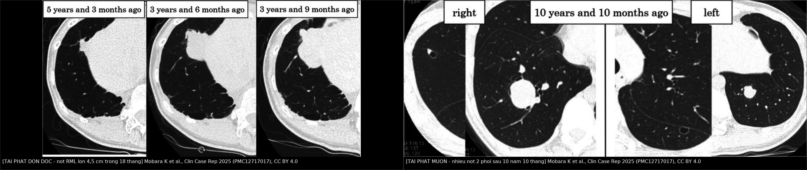
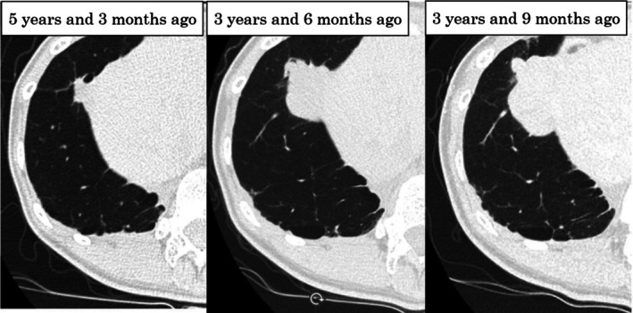
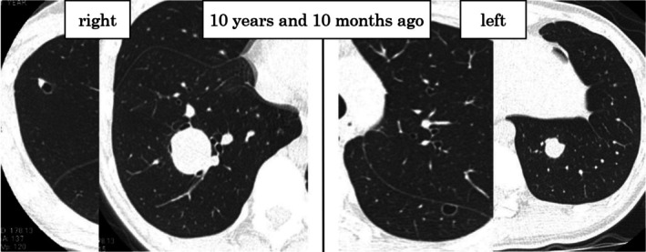
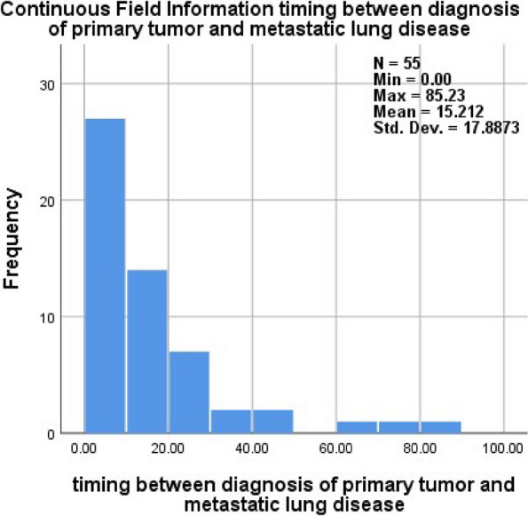
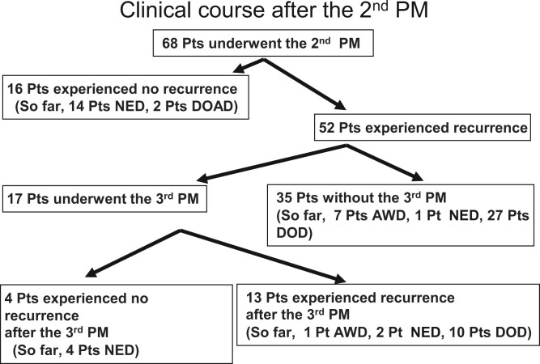

6702 — Theo dõi sau mổ nốt phổi ở trẻ: nốt mới là tái phát hay sẹo? / Follow-up after pediatric pulmonary metastasectomy: is the new nodule recurrence or scar?
Tags: pattern:not pattern:not-moi pattern:di-can pattern:di-can-tai-phat pattern:seo-sau-mo vung:phoi score:RECIST score:EURAMOS protocol:CT-nguc protocol:CT-lieu-thap protocol:metastasectomy protocol:surveillance incidentaloma:not-phoi
Mức chắc chắn (certainty): tổng hợp y văn (literature synthesis) — lịch theo dõi và sống sau mổ lấy từ đoàn hệ osteosarcoma 159 bệnh nhân/229 lần mổ (Zhang Z et al., Transl Lung Cancer Res 2026, PMC13557883), đoàn hệ nhi 55 ca (Hamoda A et al., J Egypt Natl Canc Inst 2024, PMC13313816), loạt mổ lần hai/lần ba (Kanzaki R et al., Interdiscip Cardiovasc Thorac Surg 2024, PMC10927334), ca tái phát muộn 10 năm 10 tháng có hồi phục chức năng phổi (Mobara K et al., Clin Case Rep 2025, PMC12717017) và đoàn hệ chức năng phổi người sống sót ung thư nhi (Žarković M et al., ERJ Open Res 2026, PMC13548452).
Câu chốt của bài: sau mổ nốt phổi ở trẻ, tái phát là quy luật, không phải ngoại lệ — 76,5% (52/68) tái phát sau lần mổ thứ hai, sống không tái phát 5 năm chỉ 27%. Vì vậy lịch CT ngực mới là "thuốc" chính: mỗi 2–3 tháng trong 2 năm đầu, mỗi 6 tháng đến năm thứ 5, rồi 6–12 tháng. Và mổ lại vẫn có ích khi còn cắt được toàn bộ, khoảng cách tái phát > 12 tháng là dấu hiệu tốt, còn nốt mới lớn dần sau mổ phải coi là di căn cho tới khi chứng minh ngược lại.
1. Tổng quan bệnh học – cơ chế hình ảnh: vì sao "theo dõi" là phần khó nhất
- Vì sao phải theo dõi dày: phổi là nơi di căn đầu tiên và thường duy nhất của osteosarcoma; sau khi đã mổ nốt phổi, bệnh vẫn tiếp tục tái phát ở phổi vì tế bào u đã gieo vào tuần hoàn phổi. Trong đoàn hệ 159 bệnh nhân/229 lần mổ (median follow-up 79,1 tháng): sống sau di căn 3 năm 52,2% / 5 năm 36,0% (Zhang Z et al., Transl Lung Cancer Res 2026, PMC13557883).
- Tái phát sau mổ lần hai (68 bệnh nhân, 2000–2020): 52/68 = 76,5% tái phát tiếp; sống không tái phát 5 năm 27%, sống toàn bộ 5 năm 48%. Khoảng cách từ mổ lần một đến lúc phát hiện di căn mới ≤ 12 tháng là yếu tố tiên lượng xấu độc lập cho cả sống không tái phát và sống toàn bộ (Kanzaki R et al., Interdiscip Cardiovasc Thorac Surg 2024, PMC10927334).
- Mổ lần ba có ích nhưng chọn lọc: 17/68 bệnh nhân được mổ lần ba, chỉ 3/17 đạt sống không bệnh 3 năm (Kanzaki 2024). Nghĩa là không phải mổ lại bao nhiêu lần cũng được — phải có khoảng bệnh ổn định và còn dự trữ phổi.
- Thời điểm xuất hiện di căn phổi (55 ca nhi, 78,2% osteosarcoma): trung bình 15,2 tháng (SD 17,9; 0–85,2 tháng) từ chẩn đoán u nguyên phát; 21,8% có di căn ngay lúc chẩn đoán, 30,9% trong lúc điều trị, 32,7% trong năm đầu theo dõi, 14,5% muộn (Hamoda A et al., J Egypt Natl Canc Inst 2024, PMC13313816). Sống 5 năm toàn bộ 74,8% (cả nhóm) và 68% (osteosarcoma); hoại tử u nguyên phát (p = 0,017) và thời điểm di căn (p = 0,001) là yếu tố tiên lượng có ý nghĩa.
- TẠI SAO vẫn phải theo dõi dài: tái phát muộn có thật — ca bệnh tái phát 10 năm 10 tháng sau lần mổ phổi đầu tiên, vẫn mổ lần ba và sống không tái phát 2 năm 7 tháng sau đó (Mobara K et al., Clin Case Rep 2025, PMC12717017). Ngừng theo dõi ở mốc 5 năm là bỏ sót nhóm này.
- Vật lý CT — vì sao đọc nốt sau mổ khó hơn đọc nốt lần đầu:
- Tương phản nốt–không khí rất lớn: khí phổi −800 đến −900 HU so với mô mềm +30 đến +100 HU, mô u tạo xương (osteoid) còn cao hơn → nốt > 5 mm gần như luôn thấy trên cửa sổ phổi nếu lát đủ mỏng.
- Hiệu ứng thể tích một phần (partial volume averaging): lát 5 mm làm nốt < 5 mm bị "pha loãng" với khí, mất tương phản; lát 1–1,5 mm + MIP giữ lại nốt nhỏ và nốt bám mạch.
- Đo tăng trưởng phải cùng điều kiện: cùng cửa sổ, cùng độ dày lát, cùng thì hít vào; RECIST 1.1 định nghĩa tiến triển là tăng ≥ 20% và tăng tuyệt đối ≥ 5 mm so với nadir, lấy tổng đường kính các tổn thương đích (≥ 10 mm mới làm tổn thương đích).
- Vì sao hậu phẫu gây nhiễu: sau cắt bờ nêm, đường stapler, dày màng phổi, dải xẹp phổi và biến dạng nhu mô tạo ra "nốt giả" hình bầu dục, bám đường khâu, không tròn, không lớn dần. Chỉ so chuỗi mới tách được sẹo với tái phát.
- Vì sao kích thước một mình không đủ: thời gian nhân đôi u (tumor doubling time), cắt được toàn bộ (R0) và tỉ lệ bờ cắt/kích thước u > 0,5 là các yếu tố tiên lượng được nêu trong ca Mobara 2025 — nốt nhỏ nhưng nhân đôi nhanh nguy hiểm hơn nốt to mà đứng yên.
2. Mẫu hình + chẩn đoán phân biệt theo vị trí (Gamut)
Mẫu hình: một hoặc nhiều nốt mới xuất hiện trên CT ngực ở trẻ đã mổ nốt phổi vì u đặc (osteosarcoma, Ewing, Wilms, hepatoblastoma, sarcoma mô mềm).
- Nốt đơn độc, tròn, ngoại vi, lớn dần: tái phát di căn (hàng đầu) vs u hạt lành (vôi hóa trung tâm, đứng yên ≥ 2 năm) vs hạch nội phổi (≤ 10 mm, sát màng phổi/dọc khe) vs viêm phổi tròn (bờ mờ, có sốt, tan sau kháng sinh).
- Nốt mới sát đường khâu/dưới màng phổi cùng bên mổ: hạt viêm quanh chỉ/stapler line, dày màng phổi khu trú, dải xẹp phổi (hình dải, bám màng phổi, không tròn) vs tái phát tại chỗ (tròn, lớn dần, đẩy màng phổi).
- Nhiều nốt hai bên, kích thước khác nhau: tái phát đa ổ vs nhiễm nấm xâm lấn (trung tính giảm, nốt có quầng, sau đó hang) vs thuyên tắc nhiễm khuẩn (nốt ngoại vi + mạch nuôi) vs di căn mô u khác.
- Nốt/hang trong vùng đã xạ: u ác thứ hai do xạ (radiation-induced sarcoma — xuất hiện sau nhiều năm, trong trường xạ) vs di căn hoại tử có hang vs viêm phổi do xạ (thẳng bờ trường chiếu).
- Tổn thương ngoài nhu mô: di căn xương sườn/thành ngực (phá xương, phần mềm cạnh sườn) — dễ bị bỏ qua khi chỉ đọc cửa sổ phổi.
- Gợi nhớ "4S" cho nốt mới sau mổ: Same disease (tái phát di căn) · Scar (sẹo/stapler/xẹp phổi) · Sickness (nhiễm trùng, nấm) · Second cancer (u thứ hai do xạ).
3. Bảng so sánh phân biệt (ma trận đối chiếu)
| Thực thể (entity) | Hình ảnh điển hình trên CT | Chốt vào (rule-in) | Chốt loại (rule-out) | Gợi ý xác nhận |
|---|---|---|---|---|
| Tái phát di căn | Nốt tròn, bờ rõ, ngoại vi hoặc bất kỳ thùy, có thể vôi hóa (osteoid); lớn dần trên chuỗi CT; có thể nhiều nốt hai bên | Tròn + lớn lên trên ≥ 2 lần CT cùng kỹ thuật + tiền sử sarcoma | Đứng yên ≥ 2 năm, vôi hóa đều, bờ đa giác → u hạt/hạch lành | So CT cũ cùng cửa sổ; RECIST 1.1; mô bệnh khi mổ |
| Sẹo/stapler line | Dải hoặc bầu dục, bám đường khâu/màng phổi, không tròn, có thể co kéo; không đổi qua nhiều lần chụp | Bám đường khâu + hình dải + không lớn | Tròn, lớn dần, tách khỏi đường khâu → tái phát | CT nền sau mổ; so 3–6 tháng |
| Hạch nội phổi | Nốt đặc ≤ 10 mm, sát màng phổi hoặc dọc khe, bờ đều, đậm độ mô mềm | Vị trí đặc trưng + ≤ 10 mm + ổn định | > 10 mm, bờ tua, lớn nhanh → di căn | Theo dõi; đối chiếu phim cũ |
| U hạt lành (granuloma) | Nốt nhỏ, vôi hóa trung tâm/lan tỏa, bờ đều, thùy dưới/giữa | Vôi hóa đều + ổn định ≥ 2 năm | Vôi hóa lệch tâm + lớn lên → di căn | So phim; không sinh thiết nếu điển hình |
| Nhiễm nấm xâm lấn | Nốt có quầng ground-glass (halo sign), sau đó hang; nhiều ổ; đáy phổi | Sốt + giảm bạch cầu hạt + nốt có quầng/hang | Nốt đặc, không quầng, không sốt, đứng yên → không phải nấm | Galactomannan, cấy máu, CT lặp 1–2 tuần |
| Viêm phổi tròn | Đám mờ bờ mờ, có thể có phế quản hơi, kèm sốt/ho | Triệu chứng nhiễm + tan sau kháng sinh 2–4 tuần | Không đổi sau 4 tuần, bờ rõ dần → nghĩ u | Lâm sàng + CT lặp |
| U ác thứ hai do xạ | Khối/nốt trong trường xạ cũ, xuất hiện nhiều năm sau xạ; có thể phá xương sườn | Vị trí đúng trường xạ + ≥ 5 năm sau xạ + lớn nhanh | Ngoài trường xạ, xuất hiện sớm < 1 năm → nghĩ tái phát | So mô phỏng xạ; sinh thiết |

Trái: nốt thùy giữa phải xuất hiện rồi lớn dần tới 4,5 cm trong 18 tháng — tái phát đơn độc, đã mổ lần ba. Phải: nhiều nốt hai phổi phát hiện 10 năm 10 tháng sau lần mổ phổi đầu — tái phát muộn, nhiều ổ. Nguồn: Mobara K et al., Clin Case Rep 2025 (PMC12717017), CC BY 4.0; ảnh ghép letterbox, không crop.4. Protocol chụp + hệ phân độ/điểm chuẩn hóa
- Kỹ thuật CT ngực trẻ em (ALARA):
- Không cản quang là đủ cho nốt phổi; chỉ cản quang khi cần đánh giá rốn phổi/trung thất/thành ngực.
- Lát mỏng 1–1,5 mm, tái tạo cửa sổ phổi + trung thất, MPR + MIP, thì hít vào tối đa nếu trẻ hợp tác; giảm kVp/mAs theo cân nặng.
- Luôn so với lần chụp trước trên cùng cửa sổ và cùng độ dày lát; ghi số nốt, thùy, đường kính lớn nhất, vôi hóa, khoảng cách màng phổi, quan hệ đường khâu — đây là dữ liệu quyết định mổ lại.
- Lịch theo dõi sau mổ (Zhang Z et al. 2026, PMC13557883):
| Thời gian sau mổ nốt phổi | CT ngực |
|---|---|
| 2 năm đầu | mỗi 2–3 tháng |
| Năm 3–5 | mỗi 6 tháng |
| Sau năm 5 | mỗi 6–12 tháng (tiếp tục — có ca tái phát 10 năm 10 tháng) |
| Giai đoạn chờ đáp ứng trước mổ (nếu điều trị hệ thống trước) | mỗi 4–8 tuần, thời gian theo dõi trước mổ tối ưu 2–3 tháng |
- Đánh giá đáp ứng: RECIST 1.1 (tổn thương đích ≥ 10 mm; PR giảm ≥ 30%; PD tăng ≥ 20% và ≥ 5 mm); với nốt phổi nhiều ổ, đếm và đo từng nốt thay vì chỉ đo nốt lớn nhất.
- Chức năng phổi — theo dõi bằng số, không bằng cảm giác:
- Đoàn hệ người sống sót ung thư nhi (median 7 năm sau chẩn đoán): phẫu thuật lồng ngực liên quan TLC z = −0,53; 32% có triệu chứng hô hấp nhưng 64% số người có rối loạn chức năng phổi không có triệu chứng (Žarković M et al., ERJ Open Res 2026, PMC13548452).
- Hướng dẫn IGHG chỉ khuyến cáo PFT thường quy cho người có triệu chứng đã phơi nhiễm điều trị gây hại phổi — nhưng với trẻ đã mổ phổi nhiều lần, đo FVC + thể tích phổi 3D-CT trước mỗi lần mổ lại là cách duy nhất để biết còn dự trữ.
- Ca Mobara 2025: qua 3 lần mổ phổi, FVC 2540 → 2280 → 1980 → 2080 mL (giảm ~18% so với ban đầu) nhưng thể tích phổi 3D-CT 3916 → 3699 mL gần như giữ nguyên → đừng từ chối mổ lần ba chỉ vì "đã mổ hai lần".
- Tư vấn vận động: trẻ 5–17 tuổi ≥ 60 phút/ngày vận động trung bình–mạnh; người lớn 150–300 phút/tuần (WHO 2020). Không có bằng chứng rằng vận động làm tăng tái phát; ngược lại cần duy trì thể lực trước mổ lại.
- Sơ đồ quyết định khi có nốt mới sau mổ:
flowchart TD
A[Nốt mới trên CT sau mổ nốt phổi] --> B{Nốt tròn và lớn lên trên 2 lần CT?}
B -->|Không| C[So chuỗi 3-6 tháng: sẹo, hạch, u hạt]
B -->|Có| D{Cắt được toàn bộ và u nguyên phát kiểm soát?}
D -->|Không| E[Điều trị hệ thống hoặc xạ định vị]
D -->|Có| F{Khoảng cách tái phát trên 12 tháng và còn dự trữ phổi?}
F -->|Có| G[Mổ lại: mở ngực có sờ nắn ưu tiên]
F -->|Không| H[Hội chẩn đa chuyên khoa: mổ hay hệ thống]
G --> I[CT ngực 2-3 tháng trong 2 năm đầu]
C --> J[CT lại theo lịch 2-3 tháng]
5. Biến thể bình thường và cạm bẫy
- Đọc CT quá sớm sau mổ: tràn dịch, xẹp phổi và dày màng phổi hậu phẫu che lấp hoặc giả làm nốt; lấy CT nền theo lịch chương trình rồi so chuỗi, đừng kết luận "tái phát" trên phim chụp trong vài tuần đầu.
- Stapler line giả nốt: hạt viêm quanh chỉ và dày màng phổi khu trú thường bầu dục, bám đường khâu, không lớn — đừng sinh thiết/mổ lại chỉ vì "có nốt mới" mà không so phim.
- Bỏ sót nốt nhỏ vì lát dày hoặc không dùng MIP: ở trẻ đã mổ, nốt < 5 mm vẫn có thể là di căn; đọc cả hai phổi, ba bình diện, MIP.
- "Satisfaction of search": thấy một nốt lớn rồi dừng lại — đếm đủ nốt vì tiêu chuẩn mổ là cắt toàn bộ; bỏ sót một nốt làm mất chính chỉ định đã đặt ra.
- PET/CT dương tính giả sau mổ/viêm: viêm màng phổi, hạt viêm quanh chỉ và nhiễm trùng đều ngấm FDG; không dùng PET để "chốt" tái phát khi chưa so chuỗi CT.
- Ngừng theo dõi quá sớm: tái phát 10 năm 10 tháng sau mổ đầu (Mobara 2025) — lịch 6–12 tháng sau năm 5 là có lý do.
- Từ chối mổ lại vì "đã mổ nhiều lần": FVC giảm ~18% sau 3 lần mổ nhưng thể tích phổi 3D-CT gần như không đổi; quyết định dựa trên số đo, không dựa trên số lần mổ.
- Bỏ qua cửa sổ trung thất/thành ngực: di căn xương sườn và màng phổi dễ sót nếu chỉ nhìn cửa sổ phổi.
6. Tự lượng giá — Blind Quiz
Ca 1 — Nữ 20 tuổi, osteosarcoma xương đùi phải đã mổ và thay khớp, đã mổ nốt phổi hai lần. CT ngực định kỳ ở 3 thời điểm.

- Câu hỏi: Mô tả thay đổi của nốt? Đây là sẹo hay tái phát? Cần làm gì tiếp và dựa vào đâu để quyết định mổ lần ba?
Bấm để hiện đáp án
- Hình: nốt thùy giữa phải xuất hiện, rồi lớn dần tới 4,5 cm trong 18 tháng, trong khi không có ổ di căn nào khác.
- Chẩn đoán: tái phát di căn osteosarcoma đơn độc — nốt tròn, lớn dần trên chuỗi CT là chốt; sẹo/stapler không lớn theo thời gian.
- Xử trí: mổ lần ba (cắt bờ nêm + cắt cơ hoành bị xâm lấn, vá cơ hoành) sau khi xác nhận dự trữ phổi đủ (FVC + thể tích 3D-CT); mô bệnh xác nhận tế bào hình thoi giống u nguyên phát; sau mổ sống không tái phát 2 năm 7 tháng.
- Cạm bẫy: nốt đơn độc không có nghĩa "lành" — tiên lượng tốt đến từ khoảng cách tái phát dài + tốc độ phát triển chậm + cắt được R0.
- Nguồn ảnh: Mobara K et al., Clin Case Rep 2025 (PMC12717017), Fig. 2, CC BY 4.0.
Ca 2 — Cùng bệnh nhân, CT ngực chụp 10 năm 10 tháng trước thời điểm hiện tại, sau lần mổ phổi đầu tiên.

- Câu hỏi: Mô tả phân bố tổn thương? Vì sao "đã mổ sạch" mà vẫn còn nhiều nốt? Điều này nói gì về lịch theo dõi?
Bấm để hiện đáp án
- Hình: nhiều nốt ở thùy trên phải, thùy dưới phải và thùy dưới trái — tổn thương hai bên, nhiều thùy.
- Chẩn đoán: tái phát nhiều ổ sau mổ nốt phổi đầu; bệnh nhân đã được cắt thùy dưới phải + cắt bờ nêm thùy trên phải + cắt bờ nêm thùy dưới trái.
- Vì sao: di căn phổi là bệnh gieo rải theo tuần hoàn phổi, mổ chỉ lấy được nốt nhìn/sờ thấy; nốt vi thể còn lại sẽ mọc — đây là lý do 76,5% tái phát sau mổ lần hai và sống không tái phát 5 năm chỉ 27%.
- Ý nghĩa theo dõi: phải chụp mỗi 2–3 tháng trong 2 năm đầu, rồi 6 tháng đến năm 5, sau đó 6–12 tháng — và không ngừng vì ca này tái phát ở mốc 10 năm.
- Nguồn ảnh: Mobara K et al., Clin Case Rep 2025 (PMC12717017), Fig. 1, CC BY 4.0.
Ca 3 — Trẻ 12 tuổi osteosarcoma, đã mổ nốt phổi. Bố mẹ hỏi: "Bao lâu thì hết nguy cơ tái phát để cháu đi học xa?"

- Câu hỏi: Đọc biểu đồ (55 ca nhi): thời gian từ chẩn đoán u nguyên phát đến khi phát hiện di căn phổi tập trung ở đâu? Trả lời bố mẹ thế nào?
Bấm để hiện đáp án
- Biểu đồ: thời gian từ chẩn đoán u nguyên phát đến di căn phổi trung bình 15,2 tháng (SD 17,9; 0–85,2 tháng); phần lớn ca nằm trong 24 tháng đầu.
- Phân bố theo giai đoạn: 21,8% có di căn ngay lúc chẩn đoán, 30,9% trong lúc điều trị, 32,7% trong năm đầu theo dõi, 14,5% muộn.
- Trả lời: nguy cơ cao nhất trong 2 năm đầu → CT mỗi 2–3 tháng; vẫn còn nguy cơ đến năm 5 (CT 6 tháng/lần) và sau đó (6–12 tháng/lần) — không có mốc "hết nguy cơ", nhưng có thể học xa nếu lịch chụp được duy trì và có kênh liên lạc với trung tâm điều trị.
- Nguồn ảnh: Hamoda A et al., J Egypt Natl Canc Inst 2024 (PMC13313816), Fig. 6, CC BY 4.0.
Ca 4 — Sau mổ nốt phổi lần hai, gia đình hỏi "mổ lần ba còn được không?"

- Câu hỏi: Bao nhiêu bệnh nhân tái phát sau mổ lần hai? Bao nhiêu người được mổ lần ba và kết quả ra sao? Yếu tố nào chọn người có lợi?
Bấm để hiện đáp án
- Sơ đồ 68 bệnh nhân: 16 không tái phát, 52 (76,5%) tái phát; 17 được mổ lần ba, 35 không mổ lần ba.
- Kết quả: sau mổ lần hai, sống không tái phát 5 năm 27%, sống toàn bộ 48%; trong 17 ca mổ lần ba chỉ 3 đạt sống không bệnh 3 năm.
- Chọn người có lợi: khoảng cách từ mổ lần một đến di căn mới > 12 tháng là yếu tố tiên lượng tốt cho cả sống không tái phát và sống toàn bộ; kèm cắt được toàn bộ và còn dự trữ phổi.
- Nguồn ảnh: Kanzaki R et al., Interdiscip Cardiovasc Thorac Surg 2024 (PMC10927334), Fig. 2, CC BY 4.0.
Bài liên quan chéo
- 6701 – Di căn phổi ở Wilms & sarcoma xương ở trẻ: nốt nào cắt
- 6700 – Biến chứng muộn & chuyển tiếp sau Wilms
- 381 – Di căn phổi MPNST: cắt nốt hay SBRT
- 016 – Nốt phổi ở bệnh nhân có tiền sử ung thư
- 020 – Nốt phổi
- 651 – Đánh giá đáp ứng & theo dõi sau điều trị Wilms
Không dùng để chẩn đoán độc lập khi chưa có người hướng dẫn.